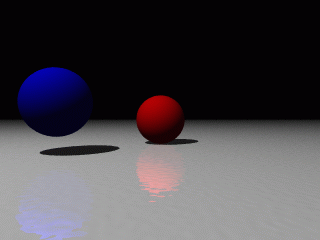
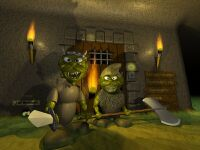

28 avril 2000
Données de base
Une scène POV se construit dans un espace à trois dimensions X, Y et Z. Elle
est constituée d’objets paramétrés essentiellement à partir de nombres
(float) et de vecteurs (vector).
Un nombre peut s’écrire 2, -3.14, 1.7e3 (=1700), .012 (équivalent à 0.012,
ou encore à 12e-3),…
28 avril 2000

Source
#include "colors.inc"
sphere {<0,0,0>,1 pigment {Red}}
sphere {<-3,.5,-3>,1 pigment {Blue}}
plane {y,-1
pigment {White}
finish {reflection .4}
normal {bozo .02 scale .1}}
light_source {<-6,12,-10>, White}
camera {
location -10*z
look_at 0}
28 avril 2000
Présentation
PovRay (Persistence Of Vision Raytracer) est un programme d’image de
synthèse basé sur un langage de description.
Ainsi, on écrit un fichier .pov décrivant une scène (objet, éclairage et
appareil-photo), puis on donne le nom du fichier en argument à Pov, qui crée
en retour l’image correspondante.
Par exemple, on peut écrire un fichier essai.pov contenant le texte suivant :
sphere {0,1 pigment {green 1}}
light_source {<-5,8,-9> rgb 1}
camera {location -3*z look_at 0}

Ci-dessus le résultat de la commande povray +i essai.pov (le nom de
l’exécutable pouvant varier suivant les systèmes).
28 avril 2000
Voici le support d’une formation Pov donnée à l’École Centrale Paris.
S’adressant à ceux qui ne connaissent pas encore Pov, elle couvre les notions
de base concernant les objets, les textures, les lumières et la programmation.
Elle est illustrée par des images réalisées grâce à Pov. Certaines sont
cliquables ce qui permet d’accéder au source .pov.
27 avril 2000
Mon image la plus aboutie, classée 9ème de l’IRTC (Internet Ray-Tracing
Competition) en 1999

800 x 600
(248 Ko)
27 avril 2000
Quelques superbes peintures de John Howe, inspirées par l’oeuvre de Tolkien,
notamment le Silmarillon et le Seigneur des anneaux.
© John Howe : les droits de
reproduction appartiennent à l’artiste ; il m’a toutefois
permis une utilisation non commerciale.
27 avril 2000
Voici quelques liens vers les premiers sites web que j’ai réalisés, en 1999-2000 :
Teper
Mon premier site, créé dans le cadre de mes études à l’École Centrale.
Howdy! This is an example blog post that shows several types of HTML content supported in this theme.
Cum sociis natoque penatibus et magnis dis parturient montes, nascetur ridiculus mus. Aenean eu leo quam. Pellentesque ornare sem lacinia quam venenatis vestibulum. Sed posuere consectetur est at lobortis. Cras mattis consectetur purus sit amet fermentum.
Curabitur blandit tempus porttitor. Nullam quis risus eget urna mollis ornare vel eu leo. Nullam id dolor id nibh ultricies vehicula ut id elit.
John Doe


{kind=link}
{kind=link}
{kind=link}
{kind=link}
{kind=link}
{kind=link}
{kind=link}
{kind=link}
{kind=link}
{kind=link}
{kind=link}
{kind=link}